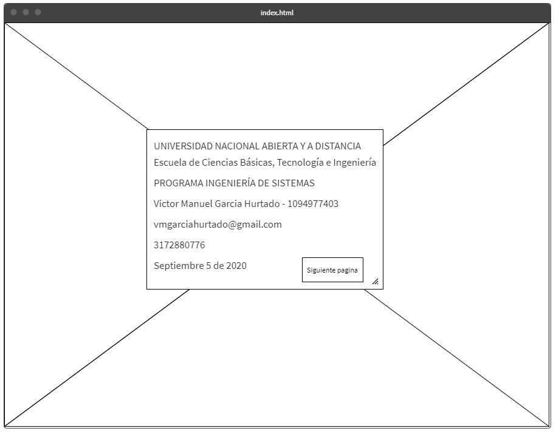
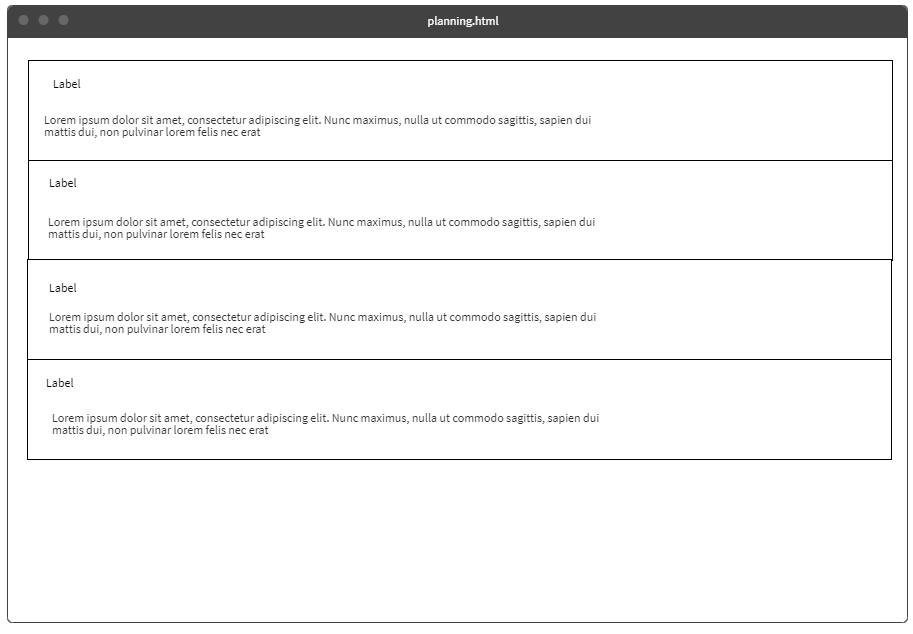

El objetivo de este sitio es exponer que son y como funcionan algunos de los programas mas usados para el versionamiento del codigo que compone nuestras aplicaciones
para esto tendremos una serie de recursos que nos ayudaran a concretar el objetivo y estaran distribuidos de la siguiente manera.
En este apartado se adjuntaran todos recursos los cuales van a ser usados para el desarrollo de la pagina
Contenido de lectura de la seccion
A continuacion se mencionaran los temas que corresponden al contenido de la pagina
En este apartado se adjuntara el mockup de la pagina
 